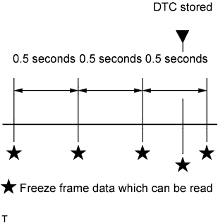

SFI SYSTEM > FREEZE FRAME DATA |
| DESCRIPTION |
 |
| LIST OF FREEZE FRAME DATA |
| LABEL (Tester Display) | Measurement Item | Diagnostic Note |
| Trouble Code | Trouble code | - |
| Injector (port) | Injection period of No. 1 cylinder | - |
| IGN Advance | Ignition advance | - |
| Calculate Load | Calculated load | The load calculated by the ECM. |
| Vehicle Load | Vehicle load | - |
| MAF | Mass air flow volume | If the value is approximately 0.0 g/sec.:
|
| Engine Speed | Engine speed | - |
| Vehicle Speed | Vehicle speed | The speed indicated on the speedometer. |
| Coolant Temp | Engine coolant temperature | If the value is -40°C (-40°F), the sensor circuit is open. If the value is 140°C (284°F) or higher, the sensor circuit is shorted. |
| Intake Air | Intake air temperature | If the value is -40°C (-40°F), the sensor circuit is open. If the value is 140°C (284°F) or higher, the sensor circuit is shorted. |
| 2nd Air System Status | Second air system status | - |
| Air-Fuel Ratio | Ratio compared to stoichiometric level | - |
| Purge Density Learn Value | Learning value of purge density | - |
| Evap Purge Flow | Ratio of evaporative purge flow to intake air volume | - |
| EVAP (Purge) VSV | EVAP purge VSV duty ratio | - |
| Knock Correct Learn Value | Correction learning value of knocking | - |
| Knock Feedback Value | Feedback value of knocking | - |
| Accelerator Position No.1 | Absolute Accelerator Pedal Position (APP) No. 1 | - |
| Accelerator Position No.2 | Absolute APP No. 2 | - |
| Throttle Position | Throttle position | - |
| Throttle Sensor Position | Throttle sensor positioning | - |
| Throttle Sensor Position #2 | Throttle sensor positioning #2 | - |
| Throttle Motor | Throttle motor | - |
| O2S B1 S2 O2S B2 S2 | Heated oxygen sensor output | Performing the Control the Injection Volume or Control the Injection Volume for A/F Sensor function of the Active Test enables the technician to check the output voltage of the sensor. |
| AFS B1 S1 AFS B2 S1 | A/F sensor output | Performing the Control the Injection Volume or Control the Injection Volume for A/F Sensor function of the Active Test enables the technician to check the output voltage of the sensor. |
| AFS B2 S1 | A/F sensor current | - |
| Total FT #1 Total FT #2 | Total fuel trim | - |
| Short FT #1 | Short-term fuel trim | Short-term fuel compensation is used to maintain the air-fuel ratio at the stoichiometric air-fuel ratio. |
| Long FT #1 | Long-term fuel trim | Overall fuel compensation is carried out in the long-term to compensate for a continual deviation of the short-term fuel trim from the central value. |
| Short FT #2 | Short-term fuel trim | Short-term fuel compensation is used to maintain the air-fuel ratio at the stoichiometric air-fuel ratio. |
| Long FT #2 | Long-term fuel trim | Overall fuel compensation is carried out in the long-term to compensate for a continual deviation of the short-term fuel trim from the central value. |
| Fuel System Status (Bank1) | Fuel system status (for Bank 1) |
|
| Fuel System Status (Bank2) | Fuel system status (for Bank 2) |
|
| O2FT B1 S2 O2FT B2 S2 | Fuel trim at heated oxygen sensor | - |
| AF FT B1 S1 | Fuel trim at A/F sensor | - |
| AFS B1 S1 | A/F sensor current | - |
| AF FT B2 S1 | Fuel trim at A/F sensor | - |
| Catalyst Temp (B1 S1) Catalyst Temp (B2 S1) | Estimated catalyst temperature (for Sensor 1) | - |
| Catalyst Temp (B1 S2) Catalyst Temp (B2 S2) | Estimated catalyst temperature (for Sensor 2) | - |
| Initial Engine Coolant Temp | Engine coolant temperature at engine start | - |
| Initial Intake Air Temp | Intake air temperature at engine start | - |
| Injection Volum (Cylinder1) | Injection volume | - |
| Air pump pressure (absolute) | Air pump pressure | - |
| Air Pump Pulsation Pressure | Air pump pulsation pressure | - |
| Power Steering Pressure | Power steering pressure sensor | - |
| ACC Relay | ACC relay status | - |
| Starter Relay | Starter relay status | - |
| Starter Signal | Starter switch (STSW) signal | - |
| Starter Control | Starter switch status | - |
| Power Steering Switch | Power steering switch status | - |
| Power Steering Signal | Power steering signal status | - |
| Closed Throttle Position SW | Closed throttle position switch | - |
| A/C Signal | A/C signal | - |
| Neutral Position SW Signal | Park/Neutral Position (PNP) switch signal | - |
| Electrical Load Signal | Electrical load signal | - |
| Stop Light Switch | Stop light switch | - |
| Immobiliser Communication | Immobiliser communication | - |
| Fuel Cut Condition | Fuel cut condition | - |
| Battery Voltage | Battery voltage | - |
| Atmosphere Pressure | Atmospheric pressure | - |
| Secondary Air Control VSV | Secondary air injection system status | - |
| ACIS VSV | VSV for Acoustic Control Induction System (ACIS) | - |
| ACT VSV | A/C cut status for Active Test | - |
| VVT Control Status (Bank2) | VVT control status | - |
| EVAP Purge VSV | EVAP purge VSV | - |
| Fuel Pump/Speed Status | Fuel pump/speed status | - |
| VVT Control Status (Bank1) | VVT control status | - |
| TC and TE1 | TC and CG (TE1) terminals of DLC3 | - |
| AI Test | AI test status | - |
| Engine Speed of Cyl #1 | Engine speed during No. 1 cylinder fuel cut | - |
| Engine Speed of Cyl #2 | Engine speed during No. 2 cylinder fuel cut | - |
| Engine Speed of Cyl #3 | Engine speed during No. 3 cylinder fuel cut | - |
| Engine Speed of Cyl #4 | Engine speed during No. 4 cylinder fuel cut | - |
| Engine Speed of Cyl #5 | Engine speed during No. 5 cylinder fuel cut | - |
| Engine Speed of Cyl #6 | Engine speed during No. 6 cylinder fuel cut | - |
| Engine Speed of Cyl #7 | Engine speed during No. 7 cylinder fuel cut | - |
| Engine Speed of Cyl #8 | Engine speed during No. 8 cylinder fuel cut | - |
| VVT Aim Angle (Bank1) | VVT aim angle | - |
| VVT Change Angle (Bank1) | VVT change angle | - |
| VVT OCV Duty (Bank1) | VVT OCV operation duty | - |
| VVT Aim Angle (Bank2) | VVT aim angle | - |
| VVT Change Angle (Bank2) | VVT change angle | - |
| VVT OCV Duty (Bank2) | VVT OCV operation duty | - |
| Idle Fuel Cut | Fuel cut idle | ON: when the throttle valve is fully closed and the engine speed is more than 3500 rpm. |
| FC TAU | Fuel cut during very light load | Fuel cut is being performed under a very light load to prevent the engine combustion from becoming incomplete. |
| Ignition | Ignition counter | - |
| Cylinder #1 Misfire Count | Cylinder #1 misfire | Only displayed during idling. |
| Cylinder #2 Misfire Count | Cylinder #2 misfire | Only displayed during idling. |
| Cylinder #3 Misfire Count | Cylinder #3 misfire | Only displayed during idling. |
| Cylinder #4 Misfire Count | Cylinder #4 misfire | Only displayed during idling. |
| Cylinder #5 Misfire Count | Cylinder #5 misfire | Only displayed during idling. |
| Cylinder #6 Misfire Count | Cylinder #6 misfire | Only displayed during idling. |
| Cylinder #7 Misfire Count | Cylinder #7 misfire | Only displayed during idling. |
| Cylinder #8 Misfire Count | Cylinder #8 misfire | Only displayed during idling. |
| All Cylinders Misfire Count | All cylinders misfire | Only displayed during idling. |
| Multi Cylinders Misfire Count | Multiple cylinder misfire | - |
| Misfire RPM | Engine speed when misfire occurred | - |
| Misfire Load | Engine load when misfire occurred | - |
| Misfire Margin | Margin to detect engine misfire | - |
| Engine Run Time | Accumulated engine running time | - |
| Time after DTC Cleared | Cumulative time after DTC cleared | - |
| Distance from DTC Cleared | Accumulated distance from DTC cleared | - |
| Warmup Cycle Cleared DTC | Warm-up cycle after DTC cleared | - |